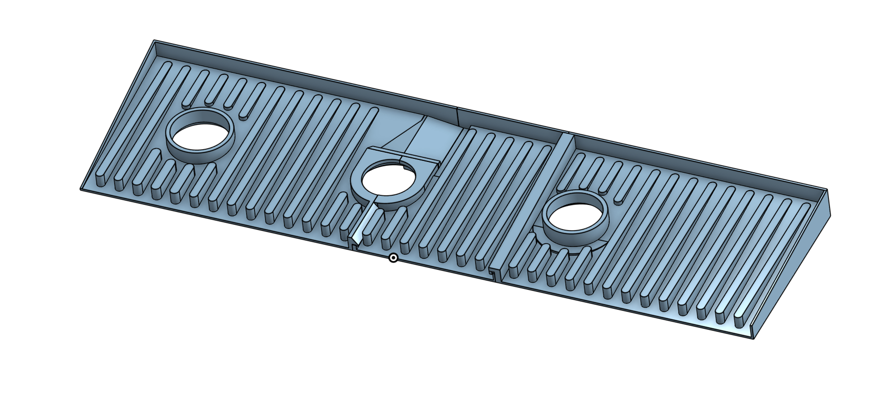
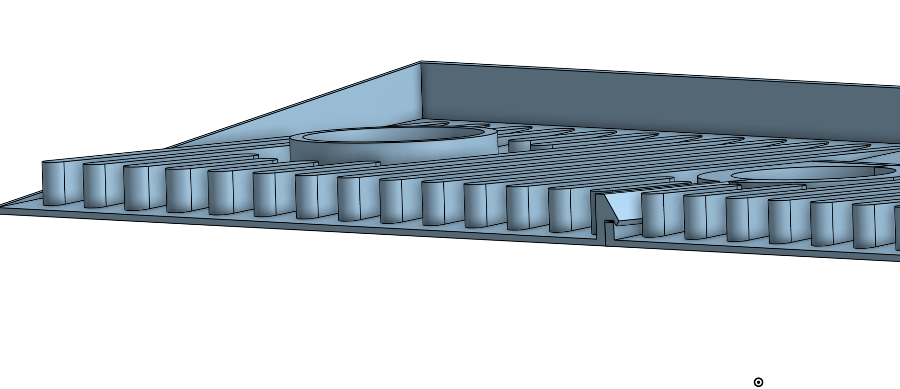
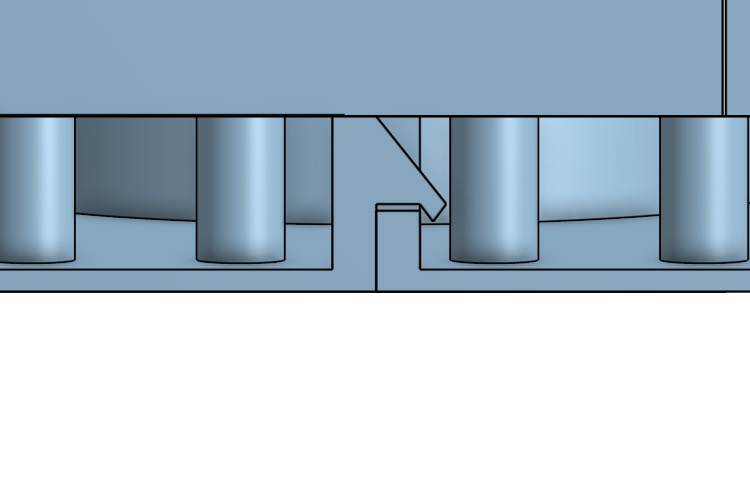

My parents had an issue finding a custom sink mat for their kitchen sink, so I designed and 3D printed a custom one for them.

Using my knowledge of existing designs and 3D printing, I knew I had to be intentional with the geometry. Since the part would constantly be exposed to soap, water, and debris, I needed to ensure proper drainage while still maintaining stability for items placed on top.
To solve this, I added a series of top surface channels to guide liquid flow while keeping the base structure rigid enough to support load.

Another key consideration was waterproofing across the multi-part design. Since the model was split into three printed sections, I used an overlapping “shingle-like” interface to reduce water leakage at the seams.

I printed the final design in PETG due to its water resistance and higher temperature tolerance, making it suitable for hot water exposure and kitchen use.
The final design was successful, and my parents were happy with the result. I also learned a lot about real-world constraints in 3D printing, especially around drainage, material choice, and multi-part assembly.
Socials